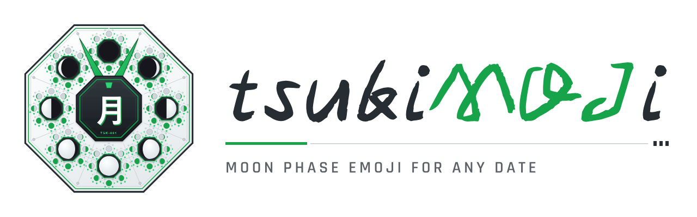

月 🌑 tsuki “moon” + moji, for JavaScript, Python and Ruby.
New Moon
新月
Illumination
Lunar age
Next 🌕 full
Next 🌑 new
Phase cycle
Method
Mean synodic month
Reference new moon
View
$ npm install tsukimoji import { emoji } from "tsukimoji"; emoji(); // "🌔"
$ pip install tsukimoji from tsukimoji import emoji emoji() # "🌔"
$ gem install tsukimoji require "tsukimoji" Tsukimoji.emoji # "🌔"